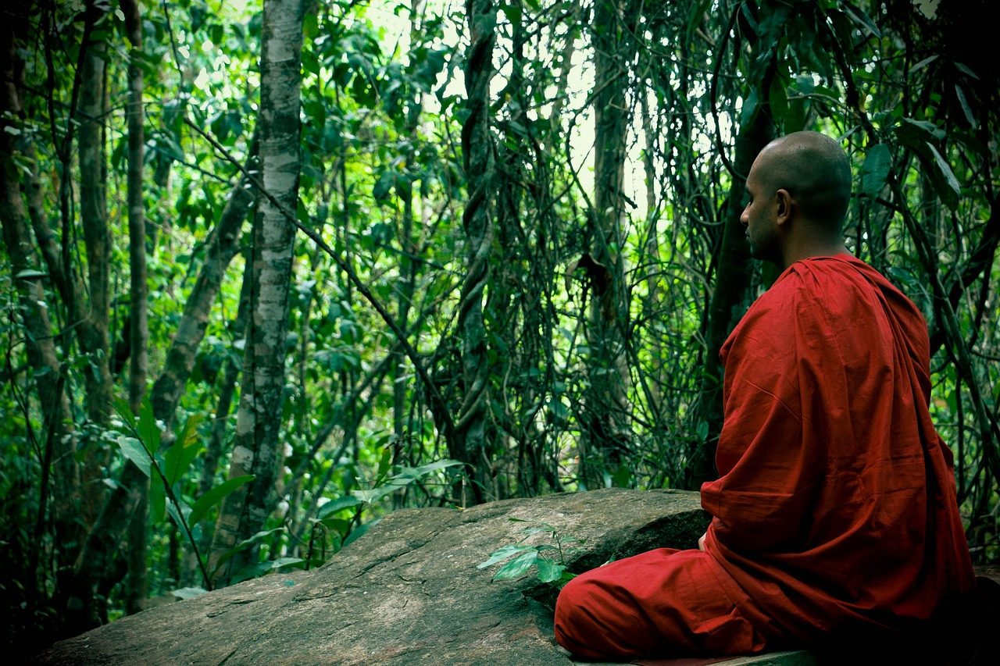

實相念佛
主法和尚開示
本篇要旨：指出修行念佛，以「實相念佛」為所達目標，並依據龍樹菩薩在《中論》觀因緣品，偈頌中所說的「四門不生」之四句偈，作為契入「實相念佛」的正方便。偈頌云：「諸法不自生，亦不從他生，不共不無因，是故知無生。」
各位蓮友，阿彌陀佛！
誰在念佛？是佛在念嗎？是眾生在念嗎？是現前的心在念嗎？當我們不去分別這一切，一切是那樣的清淨無染。從佛性本體來看，佛、眾生、心三無差別，平等一如。我們在念佛，從持名念佛到觀像念佛，然後進入觀想念佛，之後昇華為殊勝的實相念佛。
所謂「實相念佛」，就是念佛的法身，或許有人會覺得自己沒有辦法達到，光是持名念佛，就已無法專心了，那有辦法修「實相念佛」。誰說你沒辦法，佛說每一個眾生都有如來智慧德相，只因顛倒妄想不能證得。只要我們的心離分別、離執著、離有所求，那麼，當下的離相念佛，不就是「實相念佛」嗎？
只要善護清淨心，一切的修行都能歸到性相平等的實相境界。佛就是你，你就是佛；佛是我，佛是一切眾生，能夠修行到此境地，自性身即可悠遊的應化於宇宙天地間，這是多麼的逍遙自在！顯然你已經跟無我相應了。
佛法主張無我，但是凡夫卻偏偏執著有我，有我就有苦，沒有我就能離苦。好比我們的生命來到世間，乃過去情執業力牽引所致。既已形成的結果，必然要承受業報之苦。因此，認識無我是何等的重要！能了知無我，再來修念佛法門，就會別有一番的境地。
不管你懂不懂無我，諸法的當下必定是無我的。過去的我，是我嗎？過去已經過去了；現前這一念是我嗎？也馬上成為過去，那麼未來的念頭是我嗎？未來還沒有到，所以找不到有實質的「我」。或許大家會感覺到害怕，「無我」豈不是跟虛空沒有兩樣嗎？不要怕！只要我們的心安住在感恩慈悲、無我空慧裡，心中自然不為世間一切苦樂得失所動搖。
為使大家對「無我」的要義有更深層的體會，以下就依據龍樹菩薩在《中論》觀因緣品，偈頌中所說的「四門不生」之四句偈，為各位解說，以作為契入「實相念佛」的正方便。偈頌云：「諸法不自生，亦不從他生，不共不無因，是故知無生。」
所謂「諸法不自生」，就以我們五蘊（色、受、想、行、識）所組合而成的身體（物質、精神）來說：每天都利用這個身體在生活、修行。你說這物質的色法是我嗎？物質只不過是地、水、火、風四種元素的聚合，當四大分離，請問我在哪裡？
你說這精神的心法是我嗎？精神的作用只不過是受、想、行、識的組合，當四種作用分離，請問能作用的精神體在哪裡？感受的是我嗎？想像的是我嗎？造作的是我嗎？了別的是我嗎？其實，都不是。因為感受、想像、造作、了別的我，會隨著當下不同的時空因緣而變化。
例如，我們念佛止靜，端坐盤腿，時間久了，會感覺酸麻脹痛；剛才沒有盤腿時，怎麼就不痛呢？現在為何會痛呢？可見得它是變化的，不是永恆的。在持續變化的當下，又怎能說有自性的我﹙法﹚可得呢？所以它不是自己生，它是透過種種因緣條件才產生了結果，於是它非實有。既然是因緣組合而成的諸法，所以說「諸法不自生」。
好比人類的出生，是因為有父精母血因緣的結合，胚胎才能形成。如果認為有一個我在輪迴，有一個我在受苦，那過去的我，在輪迴的裡面就永遠在輪迴了，即使是做善事也無法改變了，不是嗎？但佛法所講的苦、空、無常、無我，卻啟示著我們，只要發心廣結善緣，精進念佛，淨除業障，就有辦法斷除無明而成佛。可見得所謂的「苦」並非真實，若說是實有，我們就沒有辦法改變它了。
諸位，我們所認識的一切諸法，沒有一法是自己生、自己成、自己有，過去是這樣，現在是這樣，未來還是這樣，就像這麥克風能發出聲音，必須仰賴各種因緣關係條件的組合，才能使用，它不能單獨存在，足見一切法都是依因托緣才能生起。
既然如此，我們就可以明白「諸法不自生」的道理，亦無有真實的「我」在輪迴受苦。所謂「亦不從他生」，既然一切法不能自己生，進一步就可以了解一切法也不從他處生，這個「不他生」就是不從自生以外的人、事、物、境所生，因為一切法無有自性，又怎麼可能從無自性的當中自生，或從無自性的他而生呢？由此推理，便可覺知一切法必然不能從他生，故說「亦不從他生」。
所謂「不共不無因，是故知無生。」「不共」之意，並非在說明因緣和合而生。這裡主要強調說明的，乃指「不自生」和「不他生」二者不能共同生出法來的意思。因為我們已從前面了解，「不自生」和「不他生」二者所分析的結果，也都是無自性的狀態，因此，怎麼可能由二個無自性的法，能共同生出法來呢？好比說一個人沒有錢，另一個人也沒有錢，兩個人合在一起，怎麼會變成有錢呢？由此可知自他共生也是沒有道理的，是故說「不共」。
而「不無因」乃說明宇宙之間，一切萬法的緣起生成，不會無緣無故的沒有因緣而生。好比我們的身體能作用自如，是物質和精神的結合；甚至世間萬事萬物的生成變化，亦是因緣所生法。由此推斷，即可了知一切法皆不離因緣關係條件而生，也就是在啟示我們：一切因緣所生的法，都是緣起性空，所以才說「是故知無生」。
龍樹菩薩所造的《中論》偈頌，對一切諸法「緣起性空」的真實義，精確有力的剖析，能讓迷惑眾生，深入「諸法空性」的理解，讓執著有我可得的凡夫，徹底破除妄認有我在輪迴、受苦的謬見。藉由體證「四門不生」之理地，使我們得以契會法身實相，領悟一切諸法從本以來，即不自生、不他生、不共生、不無因生，如實體悟「無生」之證量。過去、現在、未來，法性湛然，法爾如是。
過去，佛陀有一弟子，修行很精進，不久便證得宿命通，他能看到自己過去生生世世很久遠的事情，佛弟子觀察中，卻發現自己的過去世，曾經有一次與佛結下了惡緣，那個情境使他非常放不下。他矛盾的說：「佛是我的師父，亦是我尊敬的佛陀，我怎麼能對他生起瞋心呢？」正因為他被矛盾的心理給障礙住，所以久久無法成就「無生法忍」。
這個情形讓智慧第一的文殊菩薩，於正定中觀察發現，文殊為使佛弟子能證得「無生法忍」，即善用方便，立刻拔出手中的寶劍，以銳利的刀鋒往佛陀方向刺過去，佛陀目睹文殊寶劍向他刺來，非但不驚慌，而且面露微笑，心如止水的說：「文殊菩薩！你的寶劍不是不可以刺我，你要清楚我說的因緣法是甚深微妙的，你應明白手中寶劍是無我的，文殊之人也是無我的，即便 是佛也是無我的，並無真實的我可以被刺，亦無真實的寶劍可以刺，更無你文殊之人。若能深明此理，你再來刺我吧！」
典故言說至此，重點不在於文殊菩薩是否刺到佛陀，而是菩薩藉寶劍刺佛的形象，讓佛弟子了解法是無我的；亦透過佛陀對文殊的說法，亦為眾弟子開導；讓弟子解開對貪瞋癡執著束縛的枷鎖。文殊菩薩不愧為智慧第一，而佛也能覺察文殊菩薩的心意，審察到佛弟子之心境與自己過去所結的惡緣，故能觀機逗教，權巧說法，使諸弟子歇下狂心，解脫心性，成就「無生法忍」。
倘若我們大家能夠領悟「四門不生」的真義，即能體解佛陀和文殊菩薩的心，就能以無我的心念佛。無我念佛才是真實的念佛，也就是念自性佛，佛是我，我是佛，可謂「即心即佛，即佛即心。」
明代高僧蓮池大師云：「心本不生，緣合而生，心本不死，緣散而死，似有生死，原無去來，於斯會得，生順死安，常寂常照。如或未能，便當全身放下，密密持念一句阿彌陀佛，求生淨土。假使諸緣未盡，壽命未終，倍應念佛，有大利益。古云：念佛法門，此金仙氏之長生也。」
我們修行念佛，其過程可能會有種種境界考驗，如果對無我有所體會，當幻境出現時，便能即刻以無我空慧淨除魔障，使障礙減到最低。反之，以執著有我之心修行，終將成為修道的阻礙。
諸位蓮友，今天所講的有關《中論》偈頌之四句偈「四門不生」之解析，應用心深入思惟與體會，如此必能成就「實相念佛」。我們大家繼續念佛！